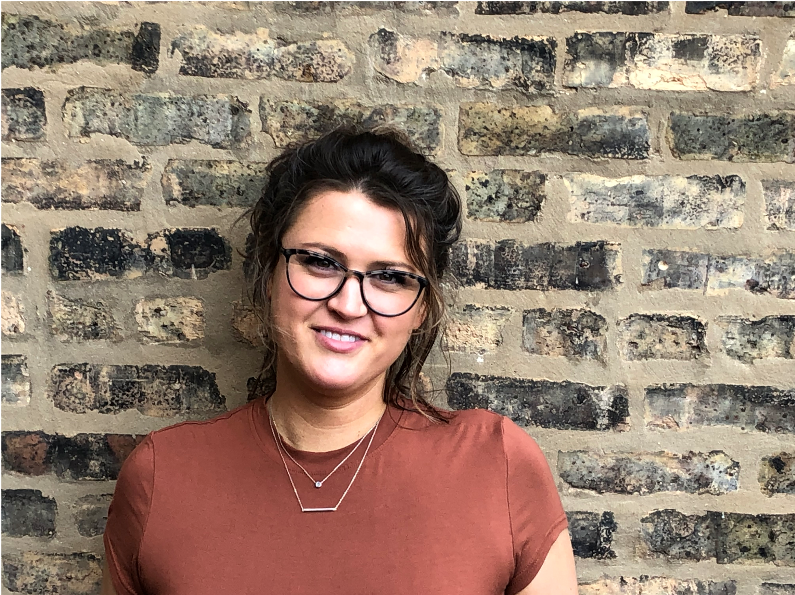
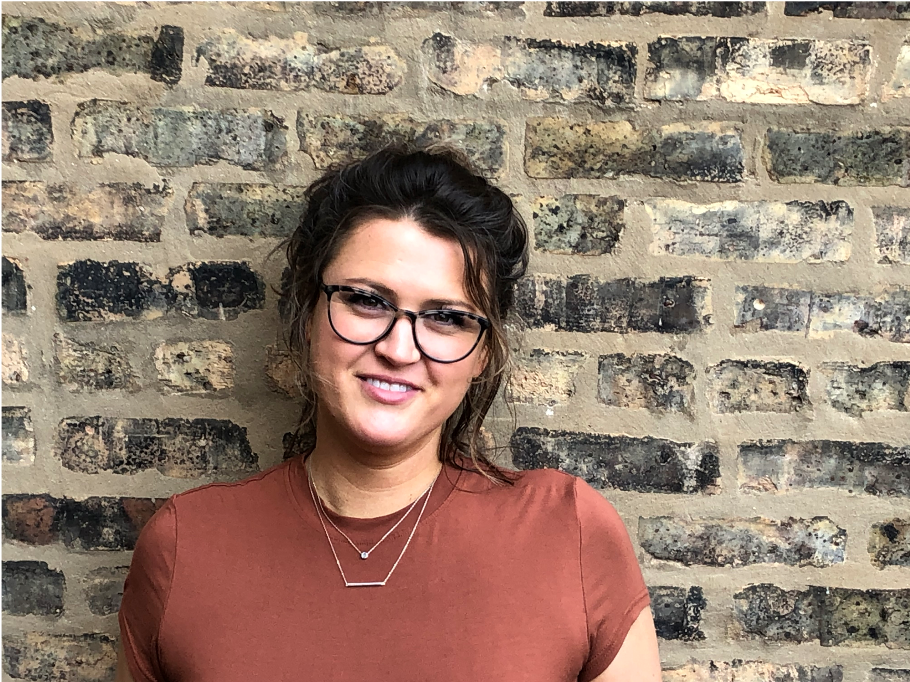

It’s been a wild ride as a small-town southern gal whose journey has allowed her to define her character in the middle east, assemble courage in comedy and discover purpose in design.
 

I was homeschooled in a small town in the South so upon moving to the Middle East after high school to do some soul searching, I quickly learned how to step outside of my comfort zone and embrace life’s daily curveballs. I befriended a girl named Tahini, a patient at the hospital where I was volunteering who was my age, and the language barrier became a game for us as we forged a friendship while she was healing. I learned that there are so many ways to communicate and that’s what I loved when I first started researching design - everything we do in design is about communicating with our users! Kindness, listening, and companionship are such assets during pain, and don't we all struggle with pain in some way?
When I returned to the states I began my career in healthcare where I learned how to respond to any situation, no matter the language. As I continued my healthcare work, I was still searching for more so since I love making people laugh and have never shied away from risk, I naturally applied to the Second City’s highly competitive Conservatory program. Now, remember, I’m just a small-town girl from Tennessee who rolled the dice on a program that draws comedians from around the world. So you can imagine my shock when I received my acceptance letter. As I settled into the Windy City, I never forgot how my friendship with Tahini blossomed out of mutual curiosity, exploration, and trust. I built relationships with friends and colleagues, learning that it is, in fact, okay to be yourself. Growing up in a homogeneous rural town, being unapologetically “you” was a privilege only a few people had. Second City taught me how to listen, connect, and, most importantly, how to bring my whole self to the table.
After 13 years in healthcare, I saw the industry move away from patient-centered care and it was heartbreaking. I started asking myself: How can I use my passion, skills, and experience to communicate and solve problems outside of the patient/therapist setting. UX design hit the mark in all areas for me and has me chomping at the bit to continue changing the world!
Please reach out! I love getting to know people and talking about design, travel, comedy, food, whiskey, dogs... and the list goes on and on
©2020 Deisgned and developed by Jen Frazier